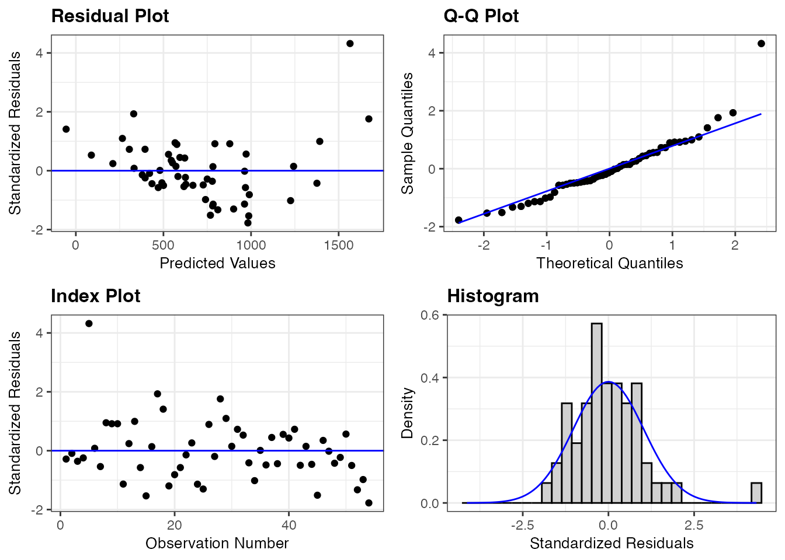

library(ggformula)
library(broom)
library(ggResidpanel)13: Diagnostic plots for MLR
Stat 230 - Spring 2026
Data and model
A hospital surgical unit was interested in predicting the survival in patients undergoing a particular type of liver operation. A random selection of 108 patients was selected for analysis. For each patient, the following information was extracted from the pre-operation evaluation and used by the research team to predict survival time (in days):
blood_clot_score: a score based on blood clotting testsprognostic_index: a prognostic index based on various health factorsenzyme_test: a score based on liver enzyme testsalchohol_use_heavy: an indicator variable for heavy alcohol use (1 = heavy use, 0 = not heavy use)
The research team determined that the following multiple regression model is a reasonable starting point:
\[ \begin{split} \text{survival time} = \beta_0 &+ \beta_1(\text{blood clot score}) + \beta_2(\text{prognostic index}) + \beta_3(\text{enzyme test})\\ &+ \beta_4(\text{heavy alcohol use}) + \epsilon \end{split} \]
This model is fit using the below code:
surgical_data <- read.csv("https://aluby.github.io/stat230/data/surgical_example_data.csv")
surgical_lm <- lm(survival_time ~ blood_clot_score + prognostic_index + enzyme_test + alchohol_use_heavy, data = surgical_data)MLR Conditions
Recap
Linearity
- Can the relationship between response Y and predictors X be adequately described with the MLR model?
- Check using (1) residual plot against fitted values, (2) residual plot against each predictor
- Any violations should be addressed before conducting inference or making conclusions
Independence
- Are the error terms independent?
- Check using the data collection process (time/space ordering) or plot of residuals against index
- Important for conducting inference
Normal residuals
- Are the error terms normally distributed?
- Check using QQplot/histogram
- Simulation-based inference (eg bootstrap) does not assume shape of residuals. If our sample size is “large” (greater than \(\approx 30\)), the CLT means that inferential methods based on the t distribution are robust to the normality assumption (eg we still get valid results). This is a less important condition.
Equal variance
- Is \(\sigma_\epsilon\) the same for all data points?
- Check with residuals against fitted. Looking for equal spread above and below the line
- Violations in the equal variance condition could make inferences based on the t-distribution unreliable. Before conducting inference, we must either address this issue or use a simulation-based approach
Checking conditions
When we have multiple predictors, we can still use residual plots to assess the conditions of the linear regression model. You can still use the resid_panel(model, type = "standardized") function in the ggResidpanel package to create a panel of residual plots that includes a plot of the residuals vs. fitted values, a histogram of the residuals, and a Q-Q plot of the residuals.
library(ggResidpanel)
resid_panel(surgical_lm, type = "standardized")
We should also check the relationship of the standardized residuals against each of the predictor variables. To do, I recommend using the augment() function from the {broom} package to create the augmented dataset, and then making the scatterplots with the graphing code of your choice.
Q1: Use the augmented dataset below to make scatterplots of the standardized residuals against (1) blood_clot_score, (2) prognostic_index, (3) enzyme_test, (4) alchohol_use_heavy
surgical_aug <- augment(surgical_lm)
# your code hereQ2: Based on the residual plots, do you think the current multiple linear regression model is appropriate for this data? Why or why not?
Q3: Regardless of your answer, apply a log transformation to the response variable and refit the model using the code below. Then, create the same residual plots for the new model. Do you think the log transformation improved the model fit? Why or why not?
log_surgical_lm <- lm(log(survival_time) ~ blood_clot_score + prognostic_index + enzyme_test + alchohol_use_heavy, data = surgical_data)
# Put your residual plot code hereMLR Influence analysis
Let’s continue working with the log-transformed model.
Q4: Use resid_panel to make plots of (a) the standardized residual vs fitted values, (b) the residual vs leverage plot, (c) cook’s distance plot. Does anything stand out?
Q5: The resid_interact function makes an interactive version of the plots which allow you to hover on the points to identify which point (index) they correspond to. What are the observation number (index) of any points you noticed above?
resid_interact(log_surgical_lm, plots = c("cookd", "lev"))Q6: Do you think any of these observations are truly influential? Why or why not? It may be useful to look back through your notes to review the definitions of these influence measures and the suggested cutoffs.